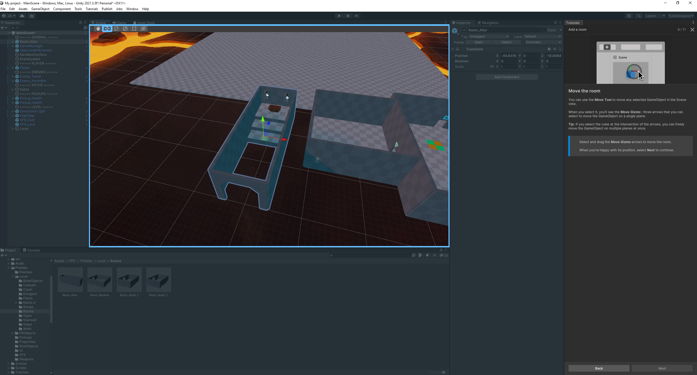
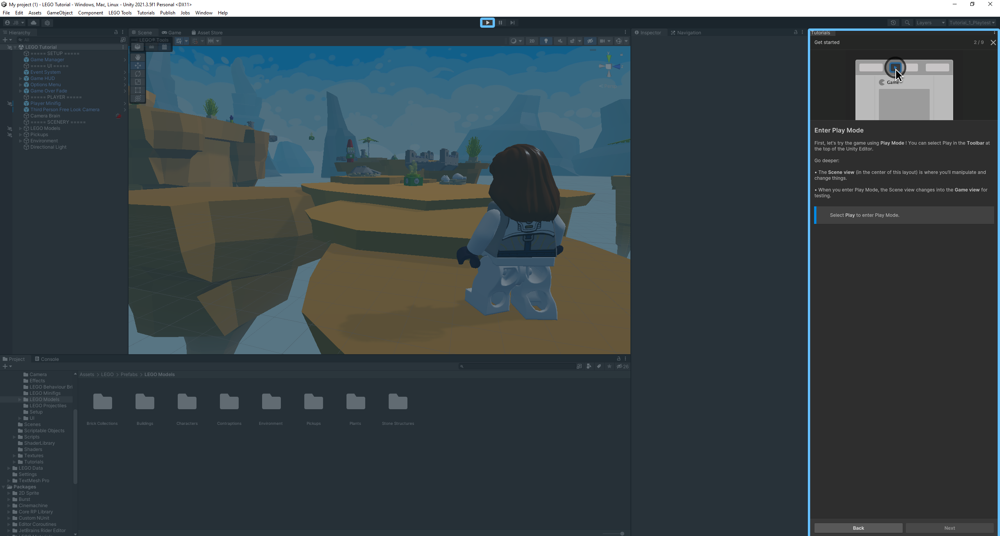

Virtual Environment Opdrachten
A-Frame | ||
Opdracht 2Bij opdracht 2 was het de bedoeling om een extra vorm toe te voegen. |
||
Opdracht 4Bij opdracht 4 is het de bedoeling om met de animatie te experimenteren. Zo moest de draairichting veranderen, maar ook de as waarom het object zich draait. |
||
Opdracht 6Bij opdracht 6 ben ik gaan experimenteren met de cursor die gebruikt kan worden. Zoals je kan zien gebeurt er iets als ik net de cursor een tijdje op het blok sta. |
||
Unity | ||
FPS Tutorial |
||
Stap 1Bij stap 1 begon de tutorial en leerde ik kennis maken met de editor. |
||
Stap 2Bij stap 2 ging ik de zwaartekracht aanpassen en testte ik dit. |
||
Stap 3Bij stap 3 is het gelukt om de zwaartekracht aan te passen. |
||
Stap 4Bij stap 4 leerde ik om een extra ruimte toe te voegen in unity. |
 | |
Stap 5Bij stap 5 kon ik de kleur van de ruimte aan gaan passen naar de kleur die ik wilde. |
||
Stap 6Bij stap 6 voegde ik een tegenstander toe aan de scene. |
||
Stap 7Bij stap 7 voegde ik een banaan als attribuut toe aan de scene. Deze kon ik plaatsen waar ik wilde. |
||
Stap 8Bij stap 8 leerde ik hoe ik de game kan publiceren |
||
LEGO Tutorial |
||
Stap 1Bij stap 1 begon de tutorial en kon ik de game afspelen en rond lopen in de map |
 | |
Stap 2Bij stap 2 ging ik de loop snelheid aanpassen, zodat ik sneller kon lopen. |
||
Stap 3Bij stap 3 voegde ik een platform toe in de map. |
||
Stap 4Bij stap 4 ging ik mijn veranderingen testen, dit kon ik helaas niet opnemen, omdat mijn computer hierdoor helemaal vast liep. |
||
Stap 5Bij stap 5 heb ik een lift werkend gemaakt in het spel. Dit kon door een blok erop te plaatsen. |
||
Stap 6Bij stap 6 testte ik de lift. |
||
Stap 7Bij stap 7 voegde ik een andere trigger toe, om te kijken wat het effect hiervan is. |
||
Stap 8Bij stap 8 veranderde ik de tekst die in de game te voor schijn kwam. |
||
Stap 9Bij stap 9 voegde ik een actie toe op een vogel. |
||
Stap 10Bij stap 10 voegde ik een look at steen toe op de vogel, zodat daar naar gekeken wordt. |
||
Stap 11Bij stap 11 voegde ik een touch brick toe, zodat er gedetecteerd kan worden als het hek aangeraakt wordt. |
||